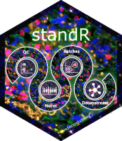

Software
I have developed or co-developed 12 open-source R and Python packages plus the vissE.cloud web server. The released Bioconductor packages have been downloaded 275,212 times in total (as of August 2026). Everything is free and open source — bug reports and contributions are welcome on GitHub.
In development
Current methods work, available from GitHub ahead of release.
spiDE
Tests whether a condition's effect on gene expression depends on the local neighbourhood, using multi-bandwidth niche covariates in a per-gene negative binomial GLM built on SpaNorm's fitting engine.
Background correction, normalisation, and quality control for multiplex spatial proteomics via a three-component mixture model, with a Java-free reader for Akoya QPTIFF, OME-TIFF, and OME-Zarr images.
The Python implementation of bgnorm, with entry points for SpatialData, xarray, AnnData, and raw image formats, plus optional experiment tracking through MLflow.
Released
Rank-based, single-sample gene set scoring of molecular phenotypes. Stable, normalisation-free scores for individual transcriptomic profiles — no cohort required.
msigdb
The Molecular Signatures Database (MSigDB) gene set collections packaged as native R objects via ExperimentHub, ready for enrichment analysis workflows.
vissE.cloud
A code-free web server bringing vissE's higher-order molecular phenotype discovery to everyone — upload enrichment results, explore themes interactively.
dcanr
Differential co-expression and network analysis of transcriptional data, with an evaluation framework for benchmarking conditional-relationship inference methods.

Quality control, normalisation, and analysis of NanoString GeoMx Digital Spatial Profiler (DSP) data within the Bioconductor spatial ecosystem.
Identify and visualise higher-order molecular phenotypes from gene set enrichment analyses by clustering gene sets and mining their text for themes.
emtdata
Curated transcriptomic datasets of the epithelial-to-mesenchymal transition (EMT), packaged via ExperimentHub for benchmarking and teaching.
Spatially-aware normalisation for spatial transcriptomics: models gene- and location-specific size factors to remove library size effects while retaining biology.
SubcellularSpatialData
Annotated, sub-cellular localised spatial transcriptomics datasets (10x Xenium, NanoString CosMx, BGI STOmics) supporting benchmarking of spatial methods.
SingscoreAMLMutations
A Bioconductor workflow demonstrating how to predict acute myeloid leukaemia mutations from transcriptomic signatures using singscore.
Download counts are total Bioconductor downloads, refreshed automatically from the Bioconductor download statistics each time the site is deployed (last updated August 2026). Hex stickers from BiocStickers.